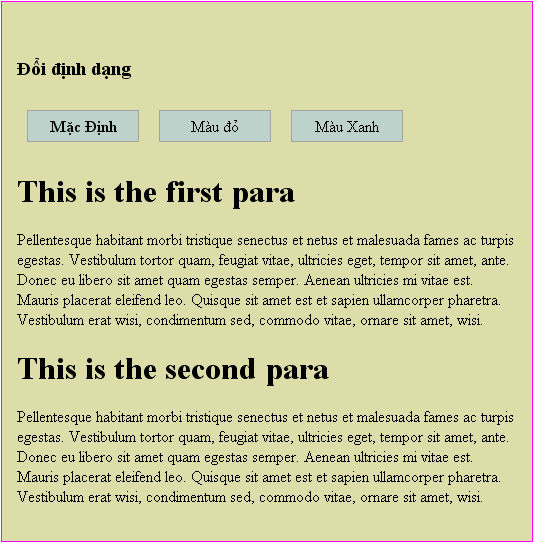
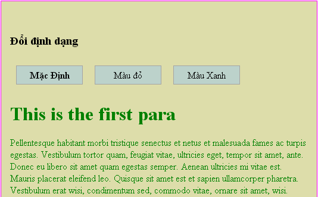

JS có 1 số cách được lập sẵn để phản ứng với những tương tác của người dùng và những sự kiện khác. Để làm cho trang web năng động và tương tác tốt, chúng ta cần phải tận dụng chức năng này, để vào những thời điểm phù hợp, chúng ta có thể sử dụng những kỹ thuật jQuery đã học và sắp học. Bạn cũng có thể làm những việc sau với anh bạn thân JS, nhưng jQuery nâng cao và mở rộng những cơ chế quản lý sự kiện cơ bản để giúp nó có cú pháp đẹp hơn, tiết kiệm thời gian hơn và tất nhiên cũng mạnh mẽ hơn.
Chúng ta đã biết cách làm cho jQuery phản ứng như thế nào khi trang web được load. Bộ phận quản lý sự kiện $(document).ready() có thể được dùng để kích hoạt 1 chút hàm nào đó, nhưng chúng ta có thể bàn thêm 1 chú về nó
Trong chương 1, chúng ta đã biết rằng $(document).ready() là cách của jQuery thực hiện các vụ tương đương với cách mà JS thực hiện tác vụ với onload event được lập sẵn. Thực tế thì 2 cách này đều có tác dụng giống nhau, nhưng chúng ta kích hoạt tác vụ ở những thời điểm hơi khác nhau
Sự kiện window.onload được kích hoạt khi mà trình duyệt đã hoàn toàn load xong tài liệu. Điều này có nghĩa rằng mọi phần tử trên trang đã sẵn sàng để được thao tác bởi JS. Đây chính là 1 điểm thuận lợi để chúng ta viết code mà không phải lo lắng về trật tự load.
Mặt khác, bộ quản lý đăng ký sử dụng $(document).ready() được kích hoạt khi DOM hoàn toàn sẵn sàng để sử dụng. Điều này cũng có nghĩa rằng mọi thành phần có thể được truy cập bởi code của chúng ta, những không nhất thiết là tài liệu liên quan đã được download. Ngay sau khi HTML được download đã chuyển qua cây DOM, code có thể được thực thi.
Lưu ý: Để đảm bảo rằng trang web vẫn có định dạng trước khi code JS được thực hiện, người ta thường đặt đằng trước thẻ < script > trong phần head của tài liệu.
Ví dụ chúng ta có 1 trang thư viện ảnh, trang đó bao gồm nhiều hình có dung lượng lớn mà chúng ta có thể ẩn, hiện, di chuyển hoặc thao tác với jQuery. Nếu bây giờ chúng ta thiết lập giao diện sử dụng sự kiện onland, thì người dùng sẽ phải đợi cho đến khi mọi tấm hình đã được download trước khi họ có thể sử dụng trang web. Hoặc tệ hơn, nếu những cách xử lý chưa được gán cho các phần tử có cách xử lý mặc định riêng như là các đường liên kết, thì việc tương tác với người dùng sẽ tạo ra những điều không mong đợi. Tuy nhiên khi chúng ta sử dụng $(document).ready(), thì giao diện sẽ sẵn sàng để sử dụng sớm hơn rất nhiều với những cách xử lý mong muốn.
Lưu ý: Cách sử dụng $(document).ready() luôn được ưa chuộng hơn là sử dụng bộ quản lý onload, nhưng chúng ta cũng nên nhớ rằng bởi vì những tệp tin hỗ trợ có thể chưa được load, cho nên những thuộc tính như độ cao và chiều rộng của tấm hình có thể chưa sẵn trong lúc này. Nếu thực sự cẩn thiết, chúng ta có thể sử dụng bộ quản lý onload( hoặc hay hơn có thể sử dụng jQuery để thiết lập bộ quản lý cho load event). Hai cách này hoàn toàn tương thích với nhau.
Cách thường dùng để đăng ký bộ quản lý sự kiện thông qua JS là gán 1 hàm cho thuộc tính tương ứng cho phần tử DOM. Giả sử như chúng ta đã định nghĩa 1 hàm:
Sau đó chúng ta có thể gắn nó trong phần code HTML như sau:
Hoặc chũng ta cũng có thể gán nó trong code JS window.onload = doStuff; Hai cách này đều thực thi hàm khi trang được load. Nhưng điểm mạnh của cách thứ 2 nằm ở chỗ những cách xử lý được tách rời khỏi mã HTML
Lưu ý: Bạn nên chú ý là khi chúng ta gán 1 hàm làm quản lý, chúng ta sử dụng tên hàm nhưng bỏ 2 dấu ngoặc đơn. Nếu có 2 dấu ngoặc, hàm đó sẽ được gọi ngay lập tức. Còn nếu không có dấu ngoặc, hàm đó tên hàm chỉ đơn giản được định danh, và có thể được dùng để gọi sau này
Nếu chỉ với 1 hàm thì cách này cũng sử dụng được. Nhưng nếu chúng ta có thêm 1 hàm nữa:
Sau đó chúng ta cũng thử chạy hàm này khi được load window.load = doOtherStuff;
Bạn sẽ thấy hàm thứ 2 sẽ thắng hàm đầu tiên. Thuộc tính .onload chỉ có thể 1 lúc chứa 1 hàm tham chiếu, cho nên chúng ta không thể thêm vào cách xử lý hiện tại. Cơ chế $(document).ready() giải quyết trường hợp này rất êm xuôi. Mỗi 1 lần phương thức được gọi, nó sẽ thêm 1 hàm mới vào danh sách cách xử lý nội bộ, nên khi trang được load, tất cả các hàm sẽ được thực hiện. Các hàm sẽ thực hiện theo thức tự mà chúng được đăng ký
Kết cấu $(document).ready() thực chất là gọi phương thức .ready() cho 1 đối tượng jQuery mà chúng ta đã tạo ra từ phần tử DOM. Hàm $() cung cấp cách viết tắt cho chúng ta bởi vì nó là 1 tác vụ phổ biến. Khi được gọi mà không có tham số, thì hàm này sẽ hoạt động như là khi tài liệu đã được thông qua. Cho nên thay vì chúng ta viết:
Hơn nữa, hàm $() có thể lấy 1 mà khác làm tham số cho nó. Cho nên khi cúng ta làm như thế. jQuery sẽ tiến hành 1 lệnh gọi ẩn đến .ready(), do vậy cách viết như sau cũng cho kết quả tương tự
Tất nhiên cách viết trên ngắn gọn hơn, những tôi khuyên bạn nên sử dụng kiểu viết đầy đủ để cho rõ ràng là đoạn code này có tác dụng gì.
Trong 1 vài trường hợp chúng ta cần phải sử dụng nhiều hơn 1 thư viện JS trên cùng 1 trang. Bởi vì nhiều thư viện cùng sử dụng ký hiệu nhận dạng $ do nó ngắn và thuận tiện, cho nên chúng ta phải có cách nào đó để tránh xảy ra xung đột giữa những tên này.
Thật may mắn khi mà jQuery cung cấp 1 phương thức gọi là .noCOnflict() để trả ký hiệu nhận dạng $ về cho các thư viện khác. Cách sử dụng phương thức .noConflict() thường thì như sau:
Đầu tiên thư viện Prototype được gọi, đây cũng là 1 thư viện JS. Sau đó là bản thân jQuery được gọi và nó sẽ sử dụng $ cho nó. Tiếp theo phương pháp .noConflict() được gọi để giải phóng $, quyền điều khiển bây giờ lại quay trờ về thư viên được gọi đầu tiên, ở đây là Prototype. Bây giờ code của chúng ta có thể sử dụng cả 2 thư viện, nhưng bất cứ khi nào chúng ta muốn sử dụng 1 phương thức jQuery, chúng ta cần phải sử dụng jQuery thay vì dấu $ làm ký hiệu nhận dạng
Phương thức .ready() còn có 1 điểm nữa có thể giúp chúng ta trong trường hợp này. Hàm gọi ngược mà chúng ta đã chuyển cho nó có thể nhận 1 tham số đơn: chính là bản thân đối tượng jQuery. Điều này cho phép chúng ta đặt lại tên cho nó mà không sợ bị xung đột
Hoặc sử dụng kiểu viết tắt chúng ta đã học ở trên
Có nhiều lúc chúng ta muốn thực hiện tác vụ vào những thời điểm mà không chỉ là lúc trăng được load. Cũng như với JS cho phép chúng ta đoán chặn sự kiện load trang với < body onload=""> hoặc window.onload. Nó cung cấp điểm neo cho những sự kiện được người dùng khởi xướng như: nhấp chuột(onlick), trường nhập liệu bị thay đổi (onchange) và cửa sổ thay đổi kích thước (onresize). Khi được gán trực tiếp vào các phần tử trong DOM, những cách này cũng có mặt hạn chế giống như những điuè chúng ta đã nói về onload. Cho nên, jQuery cho chúng ta những cách cải tiến hơn để xử lý những sự kiện này.
Để minh họa cho những quản lý sự kiện, giả sử chúng ta muốn có 1 trang web có thể thay đổi mày sắc các đoạn văn tùy ý theo ý của người dùng. Chúng ta sẽ cho phép người dùng nhấp chuột vào 3 nút để thay đổi mày sắc theo kiểu mặc định, mày đỏ, mày xanh. Khi nhấn vào nút màu đỏ, thì nội dung sẽ thành mày đỏ, khi nhấn vào màu xanh thì nội dung sẽ thành màu xanh và cuối cùng khi nhấn vào nút mặc định thì nội dunh quay về trạng thái ban đầu.
Trong thực tế, người làm web có kinh nghiệm luôn áp dụng nguyên tắc "nâng cao lỹ tiến". Nếu JS không được bật thì nút thay đổi màu sắc phải bị ẩn đi, còn không thì vẫn hoạt động bằng các đường liên kết để cho ra những phiên bản khác nhau của trang. Trong tourial này, chúng ta giải sử người dùng bật JS. Dưới đây là code HTML của nút thay đổi màu sắc của chúng ta:
Với 1 chút CSS trang web mẫu của chúng ta sẽ có dạng như hình dưới: 
Để bắt đầu, chúng ta thử với nút màu Xanh. Bần cần phải viết 1 chút code CSS để chỉ cho nó biết sẽ thay đổi như thế nào:
Mục đích của chúng ta sẽ làm là thêm 1 class greem vào thẻ body. Điều này cho phép stylesheet tái định dạng trang web sao cho phù hợp. Với kiến thức bạn học được trong chương 2, chúng ta biết sẽ viết code như thế nào
Tuy nhiên, lần này chúng ta muốn khi người dùng nhấp chuột vào nút thì class ='green' mới được thêm vào chứ không phải như trước là khi trang được load. Để làm được việc này, chúng ta cần phải cần đến phương thức .bind(). Phương thức này cho phép chúng ta cụ thể hóa bất cứ sự kiện JS nào và gán 1 cách xử lý cho nó. Trong trường hợp này sự kiện được gọi là click và cách xử lý là 1 hàm bao gồm 1 dòng code như trên:
Nếu bạn lưu lại và xem thử trên trình duyệt, khi bạn nhấp chuột vào nút màu xanh, nội dung của nó sẽ biến thành màu xanh lá cây 
Đó là tất cả những gì bạn cần phải làm để gán một sự kiện. Thế mạnh của phương thức .ready() cũng được sử dụng ở đây. Phương thức .bind() được gọi nhiều lần nhưng vẫn hoạt động tốt và nhiều cách xử lý được thêm vào cùng một sự kiện khi cần thiết. Tất nhiên đây không phải là cách hay nhất hoặc hiệu quả nhất để hoàn hành tác vụ này. Ở phần tiếp theo của tutorial, chúng ta sẽ mở rộng và cải tiến mã của chúng ta để chúng ta có thể tự hào về nó.
Bây giờ chúng ta đã có nút màu xanh hoạt động như ý, việc tiếp theo chúng ta phải làm là cho hai nút còn lại là Mặc định và Màu Đỏ cũng có thể hoạt động được. Vấn đề khá là đơn giản, chúng ta sẽ sử dụng phương thức .bind() để thêm vào một bộ xử lý click cho mỗi một nút, thêm hoặc bỏ class khi cần. Chúng ta sẽ viết mã như sau:
Trong file stylesheet bạn phải có luật sau
Với đoạn mã ở trên chúng ta đã tiến hành những việc như sau:
Nút thay đổi màu sắc của chúng ta đã làm việc như mong muốn, nhưng người dùng không biết được là nút nào đang bị bấm. Cách chúng ta sẽ làm là thêm class=’selected’ cho nút nào đang được chọn và bỏ class đó đi ở những nút không được nhấp. Chúng ta chỉ đơn giản làm cho nút đang được chọn được tô đậm hơn một chút.
Chúng ta cũng có thể làm tương tự như cách đã làm ở trên bằng cách gọi mỗi nút bằng ID riêng và thêm và bỏ class nếu cần. Nhưng thay vào đó, chúng ta có thể tìm hiểu thêm một giải pháp khác hay hơn và linh động hơn. Nó sẽ sử dụng ngữ cảnh mà bộ xử lý sự kiện đang hoạt động.
Bất cứ khi nào một bộ xử lý sự kiện được kích hoạt, thì từ khoá this đại diện cho phần tử DOM được gán một kiểu xử lý. Ở những phần trước bạn cũng đã biết rằng hàm $() có thể lấy một phần tử DOM làm tham số cho nó. Bằng cách viết $(this) trong bộ xử lý sự kiện, chúng ta tạo ra một đối tượng jQuery tương ứng với phần tử DOM, và chúng ta có thể thao tác với nó như là chúng ta đã chọn nó bằng bộ chọn CSS. Do đó chúng ta có thể viết
Chèn dòng code này vào cả 3 bộ xử lý nó sẽ thêm class=’selected’ mỗi khi nút được nhấn. Để loại bỏ class ở những nút khác, chúng ta có thể tận dụng chức năng vòng lặp ẩn của jQuery để có:
Khi bạn chèn dòng code trên vào code jQuery của bạn, nó sẽ loại bỏ hết các class ở tất cả các thẻ div có class=’button’.